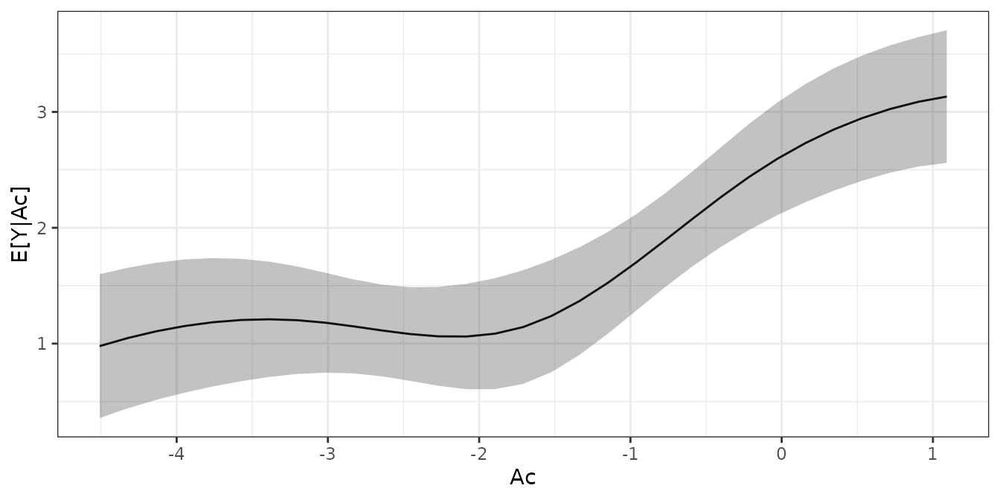
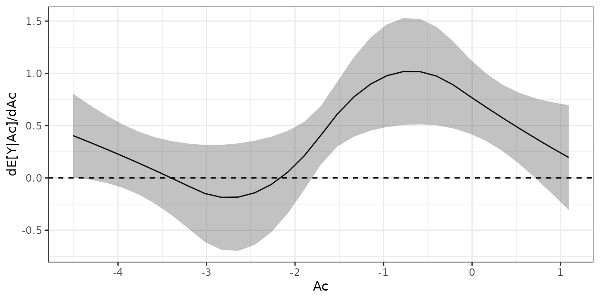

Estimating Effects After Weighting
Noah Greifer
2024-07-27
Source:vignettes/estimating-effects.Rmd
estimating-effects.RmdIntroduction
After assessing balance and deciding on a weighting specification, it comes time to estimate the effect of the treatment in the weighted sample. How the effect is estimated and interpreted depends on the desired estimand and the effect measure used. In addition to estimating effects, estimating the uncertainty of the effects is critical in communicating them and assessing whether the observed effect is compatible with there being no effect in the population. This guide explains how to estimate effects after weighting for point and longitudinal treatments and with various outcome types.
This guide is structured as follows: first, information on the concepts related to effect and standard error (SE) estimation is presented below. Then, instructions for how to estimate effects and SEs are described for the standard case (weighting for the ATE with a binary treatment and continuous outcome) and some other common circumstances. Finally, recommendations for reporting results and tips to avoid making common mistakes are presented.
Identifying the estimand
Before an effect is estimated, the estimand must be specified and clarified. Although some aspects of the estimand depend not only on how the effect is estimated after weighting but also on the weighting method itself, other aspects must be considered at the time of effect estimation and interpretation. Here, we consider three aspects of the estimand: the population the effect is meant to generalize to (the target population), the effect measure, and whether the effect is marginal or conditional.
The target population. Different weighting methods
allow you to estimate effects that can generalize to different target
populations. The most common estimand in weighting is the average
treatment effect in the population (ATE), which is the average effect of
treatment for the population from which the sample is a random sample.
Other common estimands include the average treatment effect in the
treated (ATT), the average treatment effect in the control (ATC), and
the average treatment effect in the overlap (ATO). These are defined and
explained in Greifer and Stuart (2021). The
estimand for weighting is controlled by the estimand
argument in the call to weightit(). Other allowable
estimands for some weighting methods include the average treatment
effect in the matched sample (ATM) and the average treatment effect in
the optimal subset (ATOS). These are treated just like the ATO and will
not be differentiated further.
Marginal and conditional effects. A marginal effect is a comparison between the expected potential outcome under treatment and the expected potential outcome under control. This is the same quantity estimated in randomized trials without blocking or covariate adjustment and is particularly useful for quantifying the overall effect of a policy or population-wide intervention. A conditional effect is the comparison between the expected potential outcomes in the treatment groups within strata. This is useful for identifying the effect of a treatment for an individual patient or a subset of the population.
Effect measures. The outcome types we consider here are continuous, with the effect measured by the mean difference; binary, with the effect measured by the risk difference (RD), risk ratio (RR), or odds ratio (OR); and time-to-event (i.e., survival), with the effect measured by the hazard ratio (HR). The RR, OR, and HR are noncollapsible effect measures, which means the marginal effect on that scale is not a (possibly) weighted average of the conditional effects within strata, even if the stratum-specific effects are of the same magnitude. For these effect measures, it is critical to distinguish between marginal and conditional effects because different statistical methods target different types of effects. The mean difference and RD are collapsible effect measures, so the same methods can be used to estimate marginal and conditional effects.
Our primary focus will be on marginal effects, which are appropriate for all effect measures, easily interpretable, and require few modeling assumptions.
G-computation
To estimate marginal effects, we use a method known as g-computation (Snowden, Rose, and Mortimer 2011) or regression estimation (Schafer and Kang 2008). This involves first specifying a model for the outcome as a function of the treatment and covariates. Then, for each unit, we compute their predicted values of the outcome setting their treatment status to treated, and then again for control, leaving us with two predicted outcome values for each unit, which are estimates of the potential outcomes under each treatment level. We compute the mean of each of the estimated potential outcomes across the entire sample, which leaves us with two average estimated potential outcomes. Finally, the contrast of these average estimated potential outcomes (e.g., their difference or ratio, depending on the effect measure desired) is the estimate of the treatment effect.
When doing g-computation after weighting, a few additional considerations are required. First, the outcome model should be fit incorporating the estimated weights (e.g., using weighted least squares or weighted maximum likelihood estimation) (Vansteelandt and Keiding 2011). Second, when we take the average of the estimated potential outcomes under each treatment level, if an estimand other than the ATT, ATC, or ATE is used or sampling weights are included, this must be a weighted average that incorporates the weights1. Third, if we want to target the ATT or ATC, we only estimate potential outcomes for the treated or control group, respectively (though we still generate predicted values under both treatment and control) (Wang, Nianogo, and Arah 2017).
G-computation as a framework for estimating effects after weighting has a number of advantages over other approaches. It works the same regardless of the form of the outcome model or type of outcome (e.g., whether a linear model is used for a continuous outcome or a logistic model is used for a binary outcome); the only difference might be how the average expected potential outcomes are contrasted in the final step. In simple cases, the estimated effect is numerically identical to effects estimated using other methods; for example, if no covariates are included in the outcome model, the g-computation estimate is equal to the difference in means from a t-test or coefficient of the treatment in a linear model for the outcome. There are analytic and bootstrap approximations to the SEs of the g-computation estimate. The analytic approximation is computed using the delta method, a technique for computing the SE of a quantity derived from the regression model parameters, such as the g-computation estimate.
For the reasons above, we use weighted g-computation when possible for all effect estimates, even if there are simpler methods that would yield the same estimates. Using a single workflow (with some slight modifications depending on the context; see below) facilitates implementing best practices regardless of what choices a user makes.
There are other methods to incorporate the outcome model into estimation of the treatment effect, the best studied of which is augmented inverse probability weighting (AIPW), which also involves a g-computation step. We only describe weighted g-computation here because of its conceptual simplicity, ease of implementation, and connection with best practices for estimating effects after matching.
Modeling the Outcome
The goal of the outcome model is to generate good predictions for use in the g-computation procedure described above. The type and form of the outcome model should depend on the outcome type. For continuous outcomes, one can use a linear model regressing the outcome on the treatment; for binary outcomes, one can use a generalized linear model with, e.g., a logistic link; for time-to-event outcomes, one can use a Cox proportional hazards model. Note that the purpose of including the outcome model is not to arrive at a doubly robust estimator (i.e., one that is consistent if either the outcome or propensity score model is correct); rather, it is simply to increase the precision of the weighted estimate essentially for free. To take advantage of this feature, it is important to use a canonical link (i.e., the default link for a given family), as recommended by Gabriel et al. (2024).
An additional decision to make is whether (and how) to include covariates in the outcome model. One may ask, why use weighting at all if you are going to model the outcome with covariates anyway? Weighting reduces the dependence of the effect estimate on correct specification of the outcome model; this is the central thesis of Ho et al. (2007) (though applied to matching in their case). Including covariates in the outcome model after weighting has several functions: it can increase precision in the effect estimate, reduce the bias due to residual imbalance, and make the effect estimate “doubly robust”, which means it is consistent if either the weighting reduces sufficient imbalance in the covariates or if the outcome model is correct. For these reasons, we recommend covariate adjustment after weighting when possible. There is some evidence that covariate adjustment is most helpful for covariates with standardized mean differences greater than .1 (Nguyen et al. 2017), so these covariates and covariates thought to be highly predictive of the outcome should be prioritized in treatment effect models if not all can be included due to sample size constraints.
Although there are many possible ways to include covariates (e.g., not just main effects but interactions, smoothing terms like splines, or other nonlinear transformations), it is important not to engage in specification search (i.e., trying many outcomes models in search of the “best” one). Doing so can invalidate results and yield a conclusion that fails to replicate. For this reason, we recommend only including the same terms included in the weighting model unless there is a strong a priori and justifiable reason to model the outcome differently.
It is important not to interpret the coefficients and tests of covariates in the outcome model. These are not causal effects and their estimates may be severely confounded. Only the treatment effect estimate can be interpreted as causal assuming the relevant assumptions about unconfoundedness are met. Inappropriately interpreting the coefficients of covariates in the outcome model is known as the Table 2 fallacy (Westreich and Greenland 2013). To avoid this, we only display the results of the g-computation procedure and do not examine or interpret the outcome models themselves.
Estimating Standard Errors and Confidence Intervals
Uncertainty estimation (i.e., of SEs, confidence intervals, and
p-values) may consider the variety of sources of uncertainty present in
the analysis, including (but not limited to!) estimation of the
propensity score (if used) and estimation of the treatment effect (i.e.,
because of sampling error). For some methods, methods for analytically
computing the correct asymptotic SE have been described and are
implement in WeightIt when available. These methods rely on
M-estimation (Stefanski and Boos
2002; Ross
et al. 2024), a method of combining estimation of multiple
models to adjust the standard errors for their joint estimation. For
other methods, one must rely on an approximation that treats the weights
as fixed and known, which can either yield conservative or
anti-conservative standard errors depending on the method and estimand
(Austin 2022; Reifeis and Hudgens
2020). Alternatively, one can use the bootstrap, which tends
to have good performance regardless of the situation but can be
computationally intensive for large datasets or slow weight estimation
methods (Austin
2022). We describe the correct asymptotic standard errors,
the robust standard errors treating the weights as fixed, and the
bootstrap below.
Asymptotically Correct Standard Errors Using M-estimation
M-estimation involves specifying a stack of estimating equations, one for each parameter to be estimated, that are each a function of the parameters. The final parameter estimates are those that yield a vector of 0s for the solutions of the estimating equations. These estimating equations include the parameters of the weighting model (e.g., the coefficients in the logistic regression model for the propensity score) and the parameters of the outcome model (i.e., the coefficients on treatment and the covariates). It is possible to compute the joint covariance matrix of all the estimated parameters using functions of the estimating equations and the estimated parameters. We refer curious readers to Stefanski and Boos (2002) for an introduction.
Most theoretical developments on the estimation of asymptotically
correct standard errors for propensity score-weighted treatment effect
estimates rely on M-estimation theory (Lunceford and
Davidian 2004; Reifeis and Hudgens
2020; Gabriel
et al. 2024). This method can only be used when the model
used to estimate the weights involves estimating equations. Currently,
only weights estimated using a generalized linear model propensity
score, entropy balancing, inverse probability tilting, or the
just-identified covariate balancing propensity score can be accommodated
with this method. glm_weightit() can be used to fit
generalized linear models for the outcome that account for estimation of
the weights; ordinal_weightit(),
multinom_weightit(), and coxph_weightit() can
be used to fit ordinal, multinomial, and Cox proportional hazards
models. When estimating equations are not available for a given method,
the weights are treated as fixed and known, and the M-estimation
standard errors are equal to the robust standard errors described
below.
Robust Standard Errors
Also known as sandwich SEs (due to the form of the formula for
computing them), heteroscedasticity-consistent SEs, or Huber-White SEs,
robust SEs are an adjustment to the usual maximum likelihood or ordinary
least squares SEs that are robust to violations of some of the
assumptions required for usual SEs to be valid (MacKinnon
and White 1985). They can also be adjusted to accommodate
arbitrary levels of clustering in the data (e.g., when units are sampled
from schools). Robust SEs have been shown to be conservative (i.e.,
yielding overly large SEs and wide confidence intervals) for estimating
the ATE after some forms of weighting (Robins, Hernán, and
Brumback 2000), though they can be either conservative or not
for other weighting methods and estimands, such as for the ATT (Reifeis and Hudgens
2020) or for entropy balancing (Chan, Yam, and Zhang
2016). Robust SEs treat the estimated weights as if they were
fixed and known, ignoring uncertainty in their estimation that is
otherwise accounted for by the asymptotically correct standard errors
described above. Although they are quick and simple to estimate using
functionality in the sandwich and survey
packages or using glm_weightit(), they should be used with
caution, and the bootstrap (described below) or asymptotically correct
standard errors should be preferred in most cases.
Bootstrapping
Some problems with the robust SEs described above include that they fail to take into account the estimation of the weights and are only an approximation when used to compute derived quantities from nonlinear models, which is often true when using g-computation to estimate effects. One solution to these problems is bootstrapping, which is a technique used to simulate the sampling distribution of an estimator by repeatedly drawing samples with replacement and estimating the effect in each bootstrap sample (Efron and Tibshirani 1986). From the bootstrap distribution, SEs and confidence intervals can be computed in several ways, including using the standard deviation of the bootstrap estimates as the SE estimate or using the 2.5 and 97.5 percentiles as 95% confidence interval bounds. Bootstrapping tends to be most useful when no analytic estimator of a SE is possible or has been derived yet. Bootstrapping has been found to be effective at estimating SEs and confidence intervals after weighting, often performing better even than the asymptotically correct method when it is available, specially in smaller samples (Austin 2022).
Typically, bootstrapping involves performing the entire estimation process in each bootstrap sample, including estimation both of the weights and the outcome model parameters. More bootstrap replications are always better but can take time and increase the chances that at least one error will occur within the bootstrap analysis (e.g., a bootstrap sample with zero treated units or zero units with an event). In general, numbers of replications upwards of 1000 are recommended. The traditional bootstrap resamples units from the dataset, and the fractional weighted bootstrap (Xu et al. 2020) draws a weight for each unit from a specified distribution and treats the weights as sampling weights in each replication. Both are equally valid in most cases, but the fractional weighted bootstrap can outperform the traditional bootstrap when sparse categorical variables are present in the data.
Bootstrap standard errors can be computed manually using
boot (for the traditional bootstrap) or fwb
(for the fractional weighted bootstrap) or automatically using
functionality in glm_weightit(), which, in each bootstrap
sample, re-estimates the weights and then uses those weights to fit the
outcome model. The covariance of the bootstrap estimates is used as the
parameter variance matrix. There are some methods of computing bootstrap
confidence intervals that use the bootstrap replications themselves,
e.g., by using the quantiles of the bootstrap distribution. Those are
not available in WeightIt and must be programmed
manually.
Because bootstrap standard errors involve a random component, it is
imperative to set a seed using set.seed() to ensure
reproducibility.
Estimating Treatment Effects and Standard Errors After Weighting
Below, we describe effect estimation after weighting. The focus here is not on evaluating the methods but simply on demonstrating them. In all cases, the correct propensity score model is used. We will present the asymptotically correct method that uses M-estimation, the method that uses robust SEs that treat the weights as fixed, and bootstrapping.
We’ll be using a simulated toy dataset d with several
outcome and treatment types. Code to generate the dataset is at the end
of this document. Below we display the first six rows of
d:
head(d)## A Am Ac X1 X2 X3 X4 X5 X6 X7 X8 X9 Y_C Y_B Y_S
## 1 0 C1 -2.2185 0.1725 -1.4283 -0.4103 -2.36059 1 -1.1199 0.6398 -0.4840 -0.59385 -3.591 0 857.7
## 2 0 C2 -2.2837 -1.0959 0.8463 0.2456 -0.12333 1 -2.2687 -1.4491 -0.5514 -0.31439 -1.548 0 311.6
## 3 0 C1 -1.1362 0.1768 0.7905 -0.8436 0.82366 1 -0.2221 0.2971 -0.6966 -0.69516 6.071 0 241.2
## 4 0 C1 -0.8865 -0.4595 0.1726 1.9542 -0.62661 1 -0.4019 -0.8294 -0.5384 0.20729 2.491 1 142.4
## 5 1 T 0.8613 0.3563 -1.8121 0.8135 -0.67189 1 -0.8297 1.7297 -0.6439 -0.02648 -1.100 0 206.8
## 6 0 C2 -2.1697 -2.4313 -1.7984 -1.2940 0.04609 1 -1.2419 -1.1252 -1.8659 -0.56513 -9.850 0 1962.9A is a binary treatment variable, X1
through X9 are covariates, Y_C is a continuous
outcome, Y_B is a binary outcome, and Y_S is a
survival outcome. Am and Ac are multi-category
and continuous treatment variables, respectively.
In addition to WeightIt and whatever package may be
required to estimate the weights, we will need the following packages to
perform the analyses:
-
marginaleffectsprovides theavg_comparisons()function for performing g-computation and estimating the SEs and confidence intervals of the average estimate potential outcomes and treatment effects -
survivalprovidescoxph()to estimate the coefficients in a Cox-proportional hazards model for the marginal hazard ratio, which is called internally bycoxph_weightit()for survival outcomes
Effect estimates will be computed using
marginaleffects::avg_comparisons(), even when its use may
be superfluous (e.g., for comparing the weighted difference in means).
As previously mentioned, this is because it is useful to have a single
workflow that works no matter the situation, perhaps with very slight
modifications to accommodate different contexts. Using
avg_comparisons() has several advantages, even when the
alternatives are simple: it only provides the effect estimate and not
other coefficients, and it always produces average marginal effects for
the correct population if requested.
Other packages may be of use but are not used here. There are
alternatives to the marginaleffects package for computing
average marginal effects, including margins and
stdReg. The survey package can be used to
estimate robust SEs incorporating weights and provides functions for
survey-weighted generalized linear models and Cox-proportional hazards
models. Much of the code here can be adapted to be used with
survey, and we will demonstrate that as well.
The Standard Case: Binary Treatment with Asymptotically Correct SEs
For many weighting methods, estimating the effect after weighting is
straightforward and involves fitting a model for the outcome that
incorporates the estimated weights using lm_weightit() or
glm_weightit(), then estimating the treatment effect using
g-computation (i.e., using
marginaleffects::avg_comparisons()). This procedure is the
same for continuous and binary outcomes with and without covariates.
This method uses the asymptotically correct M-estimation-based SEs when
available and robust SEs otherwise or bootstrap standard errors if
requested.
There are a few adjustments that need to be made for certain scenarios, which we describe in the section “Adjustments to the Standard Case”. These adjustments include for the following cases: when weighting for the ATT or ATC, for estimating effects with binary outcomes, and for estimating effects with survival outcomes. Estimation for all estimands other than the ATT and ATC proceeds as it does for the ATE. You must read the Standard Case to understand the basic procedure before reading about these special scenarios. We also demonstrate how to estimate effects for multi-category, continuous, and sequential treatments.
Here, we demonstrate the faster analytic approach to estimating confidence intervals; for the bootstrap approach, see the section “Using Bootstrapping to Estimate Confidence Intervals” below.
First, we will perform propensity score weighting for the ATE. Remember, all weighting methods use this exact procedure or a slight variation, so this section is critical even if you are using a different weighting method.
#PS weighting for the ATE with a logistic regression PS
W <- weightit(A ~ X1 + X2 + X3 + X4 + X5 +
X6 + X7 + X8 + X9, data = d,
method = "glm", estimand = "ATE")
W## A weightit object
## - method: "glm" (propensity score weighting with GLM)
## - number of obs.: 2000
## - sampling weights: none
## - treatment: 2-category
## - estimand: ATE
## - covariates: X1, X2, X3, X4, X5, X6, X7, X8, X9Typically one would assess balance and ensure that this weighting
specification works, but we will skip that step here to focus on effect
estimation. See vignette("WeightIt") and
vignette("cobalt", package = "cobalt") for more information
on this necessary step.
First, we fit a model for the outcome given the treatment and (optionally) the covariates. It’s usually a good idea to include treatment-covariate interactions, which we do below, but this is not always necessary, especially when excellent balance has been achieved.
#Linear model with covariates
fit <- lm_weightit(Y_C ~ A * (X1 + X2 + X3 + X4 + X5 +
X6 + X7 + X8 + X9),
data = d, weightit = W)Next, we use marginaleffects::avg_comparisons() to
estimate the ATE.
avg_comparisons(fit, variables = "A")##
## Term Contrast Estimate Std. Error z Pr(>|z|) S 2.5 % 97.5 %
## A mean(1) - mean(0) 1.96 0.346 5.66 <0.001 26.0 1.28 2.63
##
## Columns: term, contrast, estimate, std.error, statistic, p.value, s.value, conf.low, conf.high, predicted_lo, predicted_hi, predicted
## Type: responseIf, in addition to the effect estimate, we want the average estimated
potential outcomes, we can use
marginaleffects::avg_predictions(), which we demonstrate
below. Note the interpretation of the resulting estimates as the
expected potential outcomes is only valid if all covariates present in
the outcome model (if any) are interacted with the treatment.
avg_predictions(fit, variables = "A")##
## A Estimate Std. Error z Pr(>|z|) S 2.5 % 97.5 %
## 0 1.42 0.135 10.5 <0.001 84.0 1.16 1.68
## 1 3.38 0.318 10.6 <0.001 84.8 2.75 4.00
##
## Columns: A, estimate, std.error, statistic, p.value, s.value, conf.low, conf.high
## Type: responseWe can see that the difference in potential outcome means is equal to
the average treatment effect computed previously2. The arguments to
avg_predictions() are the same as those to
avg_comparisons().
Adjustments to the Standard Case
This section explains how the procedure might differ if any of the following special circumstances occur.
Weighting for the ATT or ATC
When weighting for the ATT, everything is identical to the Standard
Case except that in the calls to avg_comparisons() and
avg_predictions(), the newdata argument must
additionally be supplied to avg_comparisons() and
avg_predictions() as
newdata = subset(A == 1)This requests that g-computation be done only for the treated units.
For the ATC, replace 1 with 0.
Weighting for estimands other than the ATT, ATC, or ATE
When weighting for an estimand that changes the target population
away from one naturally defined by the data, e.g., for the ATO, ATM, or
ATOS, or when trimming weights in such a way that trimmed units are
dropped from the sample (i.e., receive a weight of 0), an adjustment
needs to be made to the call to avg_comparisons() and
avg_predictions(). For the estimands listed, we need to
supply the estimated weights to the wts argument. So, after
weighting for the ATO for example, we need to specify the following:
wts = W$weightsBinary outcomes
Estimating effects on binary outcomes is essentially the same as for
continuous outcomes. The main difference is that there are several
measures of the effect one can consider, which include the odds ratio
(OR), risk ratio/relative risk (RR), and risk difference (RD), and the
syntax to avg_comparisons() depends on which one is
desired. The outcome model should be one appropriate for binary outcomes
(e.g., logistic regression) but is unrelated to the desired effect
measure because we can compute any of the above effect measures using
avg_comparisons() after the logistic regression.
To fit a logistic regression model, change lm_weightit()
to glm_weightit() and set family = binomial.
To compute the marginal RD, we can use exactly the same syntax as in the
Standard Case; nothing needs to change3.
To compute the marginal log RR, we need to add
comparison = "lnratioavg" to
avg_comparisons(); this computes the marginal log RR. To
get the marginal RR, we need to add transform = "exp" to
avg_comparisons(), which exponentiates the marginal log RR
and its confidence interval. The code below computes the effects and
displays the statistics of interest:
#Logistic regression model with covariates
fit <- glm_weightit(Y_B ~ A * (X1 + X2 + X3 + X4 + X5 +
X6 + X7 + X8 + X9),
data = d, weightit = W,
family = binomial)
#Compute effects; RR and confidence interval
avg_comparisons(fit,
variables = "A",
comparison = "lnratioavg",
transform = "exp")##
## Term Contrast Estimate Pr(>|z|) S 2.5 % 97.5 %
## A ln(mean(1) / mean(0)) 1.64 <0.001 39.5 1.43 1.88
##
## Columns: term, contrast, estimate, p.value, s.value, conf.low, conf.high, predicted_lo, predicted_hi, predicted
## Type: responseThe output displays the marginal RR, its Z-value, the p-value for the
Z-test of the log RR against 0, and its confidence interval. (Note that
even though the Contrast label still suggests the log RR,
the RR is actually displayed.) To view the log RR and its standard
error, omit the transform argument.
For the marginal OR, the only thing that needs to change is that
comparison should be set to "lnoravg".
Multi-category outcomes can be modeled using
ordinal_weightit() and multinom_weightit(),
which fit ordinal and multinomial regression models, respectively.
Survival outcomes
There are several measures of effect size for survival outcomes, some of which are described by Mao et al. (2018). When using the Cox proportional hazards model, the quantity of interest is the hazard ratio (HR) between the treated and control groups. As with the OR, the HR is non-collapsible, which means the estimated HR will only be a valid estimate of the marginal HR when no other covariates are included in the model. Other effect measures, such as the difference in mean survival times or probability of survival after a given time, can be treated just like continuous and binary outcomes as previously described.
For the HR, we cannot compute average marginal effects and must use
the coefficient on treatment in a Cox model fit without covariates. This
means that we cannot use the procedures from the Standard Case. Here we
describe estimating the marginal HR using coxph_weightit(),
which adapts coxph() from the survival package
but allows for estimation of SEs that account for estimation of the
weights. Robust SEs for HRs were studied by Austin (2016) and
were found to be conservative. Other formulas have been developed for
estimating standard errors more accurately (Mao et al. 2018; Hajage et al. 2018), though Austin (2016) also
found the bootstrap to be adequate. The HC0 robust standard error is
requested by default, and bootstrap standard errors can be requested by
setting vcov to "BS" or
"FWB".
#Cox Regression for marginal HR
fit <- coxph_weightit(survival::Surv(Y_S) ~ A, data = d,
weightit = W)
#Log HR estimates
summary(fit)##
## Call:
## coxph_weightit(formula = survival::Surv(Y_S) ~ A, data = d, weightit = W)
##
## Coefficients:
## Estimate Std. Error z value Pr(>|z|)
## A 0.387 0.0965 4.02 5.9e-05 ***
## Standard error: HC0 robust
## Note that the output differs from that of
survival::coxph() and is more similar to that of
glm(). The Estimate column contains the log
HR. We can request the HR by setting transform = "exp" in
the call to summary().
#HR and CIs; requested by exponentiating log HRs
summary(fit, ci = TRUE, transform = "exp")##
## Call:
## coxph_weightit(formula = survival::Surv(Y_S) ~ A, data = d, weightit = W)
##
## Coefficients (transformed):
## Estimate z value Pr(>|z|) 2.5 % 97.5 %
## A 1.47 4.02 5.93e-05 1.22 1.8
## Standard error: HC0 robust
## The adjustedCurves package provides integration with
WeightIt to estimate adjusted survival estimands. We
strongly recommend using this package to estimate effects after
weighting.
Using sampling weights and/or clustered data
When sampling weights are required to generalize to the correct
population, they must be included in the call to weightit()
to estimate the balancing weights, in the outcome model, and in the call
to avg_comparisons(), etc. In most cases, this can be
handled without modifying the standard case except that
s.weights must be supplied to weightit(), and
wts = W$s.weights must be supplied to
avg_comparisons(), etc. lm_weightit() and
glm_weightit() automatically incorporate the sampling
weights into estimation of the outcome model.
If there is clustering in the sampling design, such clustering can be
accounted for by using the cluster argument to
glm_weightit(), which accepts a one-sided formula with the
clustering variable(s) on the right side. These can be used with the
traditional or fractional weighted bootstrap as well.
#Estimate the balancing weights, with sampling weights called "sw"
W <- weightit(A ~ X1 + X2 + X3 + X4 + X5 +
X6 + X7 + X8 + X9, data = d,
method = "glm", estimand = "ATE",
s.weights = "sw")
#Fit the outcome model, with clustering variable "clu"
fit <- glm_weightit(Y_C ~ A * (X1 + X2 + X3 + X4 + X5 +
X6 + X7 + X8 + X9),
data = d, weightit = W,
cluster = ~clu)
#Compute the ATE, include sampling weights in the estimation
avg_comparisons(fit,
variables = "A",
wts = W$s.weights)More complicated survey designs might require the use of the
survey package to handle them; it is important to note that
using survey::svyglm() instead of
glm_weightit() will produce standard errors that do not
account for estimation of the balancing weights. See an example below
for using survey to estimate effects after weighting.
library(survey)
#Multiply sampling weights and estimated weights
d$weights <- W$weights * d$sw
#Declare a survey design using the combined weights with
#appropriate clustering
des <- svydesign(~clu, weights = ~weights, data = d)
#Fit the outcome model
fit <- svyglm(Y_C ~ A * (X1 + X2 + X3 + X4 + X5 +
X6 + X7 + X8 + X9),
design = des)
#G-computation for the difference in means, including sampling weights
avg_comparisons(fit,
variables = "A",
wts = d$sw)Multi-Category Treatments
Multi-category treatments work essentially the same way as binary treatments. The main practical differences are in choosing the estimand and estimating the weights. The ATE and ATO are straightforward. The ATT requires choosing one group to be the treated or “focal” group. Effects are the estimated for members of that group. The contrast in the focal group between the expected potential outcomes under a non-focal treatment and the expected potential outcomes for the focal (actual) treatment can be interpreted similarly to how ATTs are interpreted for binary treatments. The contrasts in the focal group between expected potential outcomes under a pair of non-focal treatments can be interpreted as the contrast between the ATTs of the non-focal treatments. Weights may be estimated differently for multi-category treatments from binary treatments; see the individual methods pages for how they differ.
Below, we’ll estimate the ATTs of the multi-category treatment
Am for a focal level.
table(d$Am)##
## C1 C2 T
## 751 801 448We have a focal treatment group, "T", and two control
groups "C1" and "C2". We expect the ATTs for
the two control groups to be the same since we assigned them randomly
from within the original control group.
First, we estimate our weights using entropy balancing (Hainmueller
2012), identifying the focal group using
focal:
W <- weightit(Am ~ X1 + X2 + X3 + X4 + X5 +
X6 + X7 + X8 + X9, data = d,
method = "ebal", estimand = "ATT",
focal = "T")
W## A weightit object
## - method: "ebal" (entropy balancing)
## - number of obs.: 2000
## - sampling weights: none
## - treatment: 3-category (C1, C2, T)
## - estimand: ATT (focal: T)
## - covariates: X1, X2, X3, X4, X5, X6, X7, X8, X9Typically one would assess the performance of the weights (balance
and effective sample size) but we will skip that for now. Next, we fit
the outcome model and perform weighted g-computation. We use
avg_predictions() first to compute the expected potential
outcome under each treatment for the focal group, and the use
hypotheses() to test all pairwise comparisons.
#Fit the outcome model
fit <- lm_weightit(Y_C ~ Am * (X1 + X2 + X3 + X4 + X5 +
X6 + X7 + X8 + X9),
data = d, weightit = W)
#G-computation
p <- avg_predictions(fit,
variables = "Am",
newdata = subset(Am == "T"))
p##
## Am Estimate Std. Error z Pr(>|z|) S 2.5 % 97.5 %
## C1 1.64 0.355 4.62 <0.001 18.0 0.945 2.34
## C2 1.84 0.301 6.12 <0.001 30.0 1.252 2.43
## T 3.75 0.217 17.27 <0.001 219.7 3.324 4.17
##
## Columns: Am, estimate, std.error, statistic, p.value, s.value, conf.low, conf.high
## Type: response
hypotheses(p, "revpairwise")##
## Term Estimate Std. Error z Pr(>|z|) S 2.5 % 97.5 %
## C2 - C1 0.20 0.465 0.431 0.667 0.6 -0.712 1.11
## T - C1 2.11 0.416 5.064 <0.001 21.2 1.292 2.92
## T - C2 1.91 0.371 5.144 <0.001 21.8 1.181 2.63
##
## Columns: term, estimate, std.error, statistic, p.value, s.value, conf.low, conf.high
## Type: responseWe find significant ATTs between the focal treatment and control
levels (T - C1 and T - C2), but the difference
between control levels (C2 - C1), which can be interpreted
as the difference between these ATTs, is nonsignificant, as
expected.
Continuous Treatments
For continuous treatments, one estimand of interest is the average
dose-response function (ADRF), which links the value of the treatment to
the expected potential outcome under that treatment value across the
full sample. We do not provide a detailed account of the ADRF but will
demonstrate how to estimate weights that balance covariates with respect
to a continuous treatment and how to estimate and plot the ADRF in the
weighted sample. We’ll use the continuous treatment Ac,
which ranges from -10.37 to 6.26, and estimate its effect on the
continuous outcome Y_C.
First, we’ll estimate entropy balancing weights (Vegetabile
et al. 2021) using weightit().
W <- weightit(Ac ~ X1 + X2 + X3 + X4 + X5 +
X6 + X7 + X8 + X9, data = d,
moments = 2, int = TRUE,
method = "ebal")
W## A weightit object
## - method: "ebal" (entropy balancing)
## - number of obs.: 2000
## - sampling weights: none
## - treatment: continuous
## - covariates: X1, X2, X3, X4, X5, X6, X7, X8, X9Typically one would assess the performance of the weights (balance
and effective sample size) but we will skip that for now. Next, we fit
the outcome model and perform weighted g-computation. For the outcome
model, we will use a natural cubic spline on Ac with 4 df.
You can use any transformation of the treatment, e.g., a polynomial
transformation using poly(), as long as it is flexible
enough to capture any possible ADRF; purely nonparametric methods like
kernel regression can be used as well, but inference for them is more
challenging. Covariates can be included in the model, but with many
covariates, many basis functions for the treatment, and a full set of
treatment-covariate interactions, the resulting estimates may be
imprecise.
#Fit the outcome model
fit <- lm_weightit(Y_C ~ splines::ns(Ac, df = 4) *
(X1 + X2 + X3 + X4 + X5 +
X6 + X7 + X8 + X9),
data = d, weightit = W)Next we use avg_predictions() first to compute the
expected potential outcome under a representative set of treatment
values. We’ll examine 31 treatment values from the 10th to 90th
percentiles of Ac because estimates outside those ranges
tend to be imprecise.
#Represenative values of Ac:
values <- with(d, seq(quantile(Ac, .1),
quantile(Ac, .9),
length.out = 31))
#G-computation
p <- avg_predictions(fit,
variables = list(Ac = values))Although one can examine the expected potential outcomes, it is often
more useful to see them plotted. We can generate a plot of the ADRF and
its pointwise confidence band using ggplot24:
library("ggplot2")
ggplot(p, aes(x = Ac)) +
geom_line(aes(y = estimate)) +
geom_ribbon(aes(ymin = conf.low, ymax = conf.high),
alpha = .3) +
labs(x = "Ac", y = "E[Y|A]") +
theme_bw()
We can see that the ADRF has an elbow-shape, with a zone of no evidence of treatment effect followed by a zone of increasing values of the outcome as the treatment increases.
Another way to characterize the effect of continuous treatments is to
examine the average marginal effect function (AMEF), which is a function
that relates the value of treatment to the derivative of the ADRF. When
this derivative is different from zero, there is evidence of a treatment
effect at the corresponding value of treatment. Below, we use
avg_slopes() to compute the pointwise derivatives of the
ADRF across levels of Ac and then plot it5.
# Estimate the pointwise derivatives at representative
# values of Ac
s <- avg_slopes(fit,
variables = "Ac",
newdata = datagrid(Ac = values,
grid_type = "counterfactual"),
by = "Ac")
# Plot the AMEF
ggplot(s, aes(x = Ac)) +
geom_line(aes(y = estimate)) +
geom_ribbon(aes(ymin = conf.low, ymax = conf.high),
alpha = .3) +
geom_hline(yintercept = 0, linetype = "dashed") +
labs(x = "Ac", y = "dE[Y|A]/dA") +
theme_bw()
We can see that between values of -1.8 and .5, there is evidence of a
positive effect of Ac on Y_C (i.e., because
the confidence intervals for the slope of the ADRF at those values of
Ac exclude 0). This is in line with our observation above
that the treatment only appears to have an effect at higher values of
Ac.
Longitudinal Treatments
For longitudinal treatments, estimation proceeds as usual, except
that we estimate weights using weightitMSM() and fit a
weighted outcome model that includes treatment at all time periods (and,
optionally, and covariates measured prior to the first treatment). It is
important not to include any covariates possibly caused by any of the
treatments to avoid any bias; this is the whole point of using weighting
to estimate the marginal structural model in the first place.
glm_weightit() makes it easy to incorporate the weights
and account for their estimation in computing the parameter variance
matrix, if desired. As with other methods, when the components required
for M-estimation are included in the weightitMSM() output,
they will be used to estimate standard errors that adjust for estimation
of the weights. Otherwise, the weights can be treated as fixed or the
whole estimation can be done through bootstrapping.
Below, we demonstrate using the usual inverse probability weights for
a marginal structural model. Because these weights are computed from
propensity scores estimated with logistic regression, we can use
M-estimation to adjust for their estimation in computing the parameter
covariance matrix. This also includes estimation of the standardization
factor, if any. We’ll use the toy dataset msmdata that
comes with WeightIt.
data("msmdata")
Wmsm <- weightitMSM(list(A_1 ~ X1_0 + X2_0,
A_2 ~ X1_1 + X2_1 +
A_1 + X1_0 + X2_0,
A_3 ~ X1_2 + X2_2 +
A_2 + X1_1 + X2_1 +
A_1 + X1_0 + X2_0),
data = msmdata, method = "glm",
stabilize = TRUE)Next we’ll fit the outcome model using glm_weightit(),
which includes the baseline covariates (i.e., only those measured prior
the first treatment).
fit <- glm_weightit(Y_B ~ A_1 * A_2 * A_3 * (X1_0 + X2_0),
data = msmdata, weightit = Wmsm,
family = binomial)Then, we compute the average expected potential outcomes under each
treatment regime using
marginaleffects::avg_predictions():
(p <- avg_predictions(fit,
variables = c("A_1", "A_2", "A_3")))##
## A_1 A_2 A_3 Estimate Std. Error z Pr(>|z|) S 2.5 % 97.5 %
## 0 0 0 0.687 0.0166 41.4 <0.001 Inf 0.654 0.719
## 0 0 1 0.521 0.0379 13.7 <0.001 140.3 0.447 0.595
## 0 1 0 0.491 0.0213 23.1 <0.001 389.1 0.449 0.532
## 0 1 1 0.438 0.0295 14.8 <0.001 163.2 0.380 0.496
## 1 0 0 0.602 0.0211 28.5 <0.001 590.8 0.561 0.644
## 1 0 1 0.544 0.0314 17.3 <0.001 221.0 0.482 0.605
## 1 1 0 0.378 0.0163 23.2 <0.001 393.1 0.346 0.410
## 1 1 1 0.422 0.0261 16.1 <0.001 192.3 0.371 0.473
##
## Columns: A_1, A_2, A_3, estimate, std.error, statistic, p.value, s.value, conf.low, conf.high
## Type: responseWe can compare individual predictions using
marginaleffects::hypotheses(). For example, to compare all
treatment histories to just the first treatment history (i.e., in which
all units are untreated for all time periods), we can run the
following:
hypotheses(p, "reference")##
## Term Estimate Std. Error z Pr(>|z|) S 2.5 % 97.5 %
## 0, 0, 1 - 0, 0, 0 -0.1658 0.0414 -4.00 < 0.001 14.0 -0.247 -0.0846
## 0, 1, 0 - 0, 0, 0 -0.1960 0.0269 -7.29 < 0.001 41.5 -0.249 -0.1433
## 0, 1, 1 - 0, 0, 0 -0.2488 0.0337 -7.38 < 0.001 42.6 -0.315 -0.1828
## 1, 0, 0 - 0, 0, 0 -0.0842 0.0270 -3.12 0.00179 9.1 -0.137 -0.0314
## 1, 0, 1 - 0, 0, 0 -0.1428 0.0356 -4.02 < 0.001 14.0 -0.212 -0.0731
## 1, 1, 0 - 0, 0, 0 -0.3083 0.0232 -13.30 < 0.001 131.6 -0.354 -0.2629
## 1, 1, 1 - 0, 0, 0 -0.2647 0.0308 -8.61 < 0.001 56.9 -0.325 -0.2044
##
## Columns: term, estimate, std.error, statistic, p.value, s.value, conf.low, conf.high
## Type: responseModeration Analysis
Moderation analysis involves determining whether a treatment effect differs across levels of another variable. The use of weighting with moderation analysis is described in Griffin et al. (2023). The goal is to achieve balance within each subgroup of the potential moderating variable, and there are several ways of doing so. Broadly, one can either perform weighting in the full dataset and interact the moderator with the other covariates in the weighting model, or one can perform completely separate analyses in each subgroup.
In some cases, e.g., when using unregularized parametric methods like
GLM propensity score weighting, CBPS, entropy balancing, or inverse
probability tilting, both methods yield identical results. To fit a
weighting model within each subgroup, one can use the by
argument to weightit(), which does just this6. There is also the
possibility of using the subgroup balancing propensity score (Dong et al.
2020) implemented using sbps(), which determines
whether a single weighting model fit to the whole or a subgroup-specific
weighting model is best for each subgroup and overall. The chosen
approach should be that which achieves the best balance, though we don’t
demonstrate assessing balance here to maintain focus on effect
estimation.
We’ll consider the binary variable X5 to be the
potential moderator of the effect of A on Y_C.
Below, we’ll estimate weights using CBPS for the ATE within each level
of X5 by supplying it to the by argument.
Wm <- weightit(A ~ X1 + X2 + X3 + X4 + X5 +
X6 + X7 + X8 + X9, data = d,
method = "cbps", estimand = "ATE",
by = ~X5)
Wm## A weightit object
## - method: "cbps" (covariate balancing propensity score weighting)
## - number of obs.: 2000
## - sampling weights: none
## - treatment: 2-category
## - estimand: ATE
## - covariates: X1, X2, X3, X4, X5, X6, X7, X8, X9
## - by: X5Because we are using CBPS, equivalent weights could be estimated by
interacting X5 with the other covariates, e.g.,
A ~ X5 * (X1 + X2 + ...).
It is straightforward to check subgroup balance using
cobalt::bal.tab(), which has a cluster
argument that can be used to assess balance within subgroups, e.g., by
cobalt::bal.tab(Wm, cluster = "X5"). See
vignette("segmented-data", package = "cobalt") for
details.
If we are satisfied with balance, we can then model the outcome with an interaction between the treatment, the moderator, and, optionally, the covariates. This is equivalent to fitting a model for the outcome within each combination of the treatment and moderator, so it can be a good idea to simplify this model to include just the most important covariates to the outcome in order to avoid estimating too many parameters. At a minimum, you must include an interaction between the treatment and moderator. Here, we’ll fit a linear regression model including the just the first three covariates in addition to the treatment and moderator (allowing the covariates to interact with both).
fit <- lm_weightit(Y_C ~ A * X5 * (X1 + X2 + X3),
data = d, weightit = Wm)To estimate the subgroup ATEs, we can use
avg_comparisons(), this time specifying the by
argument to signify that we want treatment effects stratified by the
moderator.
avg_comparisons(fit, variables = "A",
by = "X5")##
## Term Contrast X5 Estimate Std. Error z Pr(>|z|) S 2.5 % 97.5 %
## A mean(1) - mean(0) 0 1.16 0.480 2.41 0.0159 6.0 0.217 2.10
## A mean(1) - mean(0) 1 2.38 0.454 5.24 <0.001 22.5 1.487 3.27
##
## Columns: term, contrast, X5, estimate, std.error, statistic, p.value, s.value, conf.low, conf.high, predicted_lo, predicted_hi, predicted
## Type: responseWe can see that the subgroup mean differences differ from each other,
and we can formally test for moderation using another call to
avg_comparisons(), this time using the
hypothesis argument to signify that we want to compare
effects between subgroups:
avg_comparisons(fit, variables = "A",
by = "X5",
hypothesis = "pairwise")##
## Term Estimate Std. Error z Pr(>|z|) S 2.5 % 97.5 %
## 0 - 1 -1.22 0.66 -1.85 0.065 3.9 -2.51 0.0759
##
## Columns: term, estimate, std.error, statistic, p.value, s.value, conf.low, conf.high
## Type: responseThough the subgroup effects differ from each other in the sample,
this difference is not statistically significant at the .05 level, so
there is no evidence of moderation by X5.
When the moderator has more than two levels, it is possible to run an
omnibus test for moderation by changing hypothesis to
"reference" and supplying the output to
marginaleffects::hypotheses() with
joint = TRUE, e.g.,
avg_comparisons(fit, variables = "A",
by = "X5",
hypothesis = "reference") |>
hypotheses(joint = TRUE)This produces a single p-value for the test that all pairwise differences between subgroups are equal to zero.
It is important to remember that the presence of moderation does not imply that the moderator causes differences in the treatment effect; it may simply be associated with a variable that interacts with the treatment (VanderWeele 2009). In addition, depending on which variables are adjusted for and how, moderation may not necessarily represent a disparity, even if one group experiences less benefit than another group (Jackson 2021).
Reporting Results
It is important to be as thorough and complete as possible when describing the methods of estimating the treatment effect and the results of the analysis. This improves transparency and replicability of the analysis. Results should at least include the following:
- a description of the outcome model used (e.g., logistic regression, a linear model with treatment-covariate interactions and covariates, a Cox proportional hazards model with the propensity score weights applied)
- the way the effect was estimated (e.g., using g-computation or as the coefficient in the outcome model)
- the way SEs were estimated (e.g., using M-estimation, using robust SEs that treat the weights as fixed, using the fractional weighted bootstrap with 1000 bootstrap replications and the entire process of weighting and effect estimation included in each replication)
- R packages and functions used in estimating the effect and its SE
(e.g.,
glm_weightit()inWeightIt,avg_comparisons()inmarginaleffects) - The effect and its SE and confidence interval
All this is in addition to information about the weighting method, estimand, propensity score estimation procedure (if used), balance assessment, etc.
References
Code to Generate Data used in Examples
#Generating data similar to Austin (2009) for demonstrating treatment effect estimation
gen_X <- function(n) {
X <- matrix(rnorm(9 * n), nrow = n, ncol = 9)
X[,5] <- as.numeric(X[,5] < .5)
X
}
gen_Ac <- function(X) {
LP_A <- -1.2 + log(2)*X[,1] - log(1.5)*X[,2] + log(2)*X[,4] - log(2.4)*X[,5] + log(2)*X[,7] - log(1.5)*X[,8]
LP_A + rlogis(nrow(X))
}
#~20% treated
gen_A <- function(Ac) {
1 * (Ac > 0)
}
gen_Am <- function(A) {
factor(ifelse(A == 1, "T", sample(c("C1", "C2"), length(A), TRUE)))
}
# Continuous outcome
gen_Y_C <- function(A, X) {
2*A + 2*X[,1] + 2*X[,2] + 2*X[,3] + 1*X[,4] + 2*X[,5] + 1*X[,6] + rnorm(length(A), 0, 5)
}
#Conditional:
# MD: 2
#Marginal:
# MD: 2
# Binary outcome
gen_Y_B <- function(A, X) {
LP_B <- -2 + log(2.4)*A + log(2)*X[,1] + log(2)*X[,2] + log(2)*X[,3] + log(1.5)*X[,4] + log(2.4)*X[,5] + log(1.5)*X[,6]
P_B <- plogis(LP_B)
rbinom(length(A), 1, P_B)
}
#Conditional:
# OR: 2.4
# logOR: .875
#Marginal:
# RD: .144
# RR: 1.54
# logRR: .433
# OR: 1.92
# logOR .655
# Survival outcome
gen_Y_S <- function(A, X) {
LP_S <- -2 + log(2.4)*A + log(2)*X[,1] + log(2)*X[,2] + log(2)*X[,3] + log(1.5)*X[,4] + log(2.4)*X[,5] + log(1.5)*X[,6]
sqrt(-log(runif(length(A)))*2e4*exp(-LP_S))
}
#Conditional:
# HR: 2.4
# logHR: .875
#Marginal:
# HR: 1.57
# logHR: .452
set.seed(19599)
n <- 2000
X <- gen_X(n)
Ac <- gen_Ac(X)
A <- gen_A(Ac)
Am <- gen_Am(A)
Y_C <- gen_Y_C(A, X)
Y_B <- gen_Y_B(A, X)
Y_S <- gen_Y_S(A, X)
d <- data.frame(A, Am, Ac, X, Y_C, Y_B, Y_S)